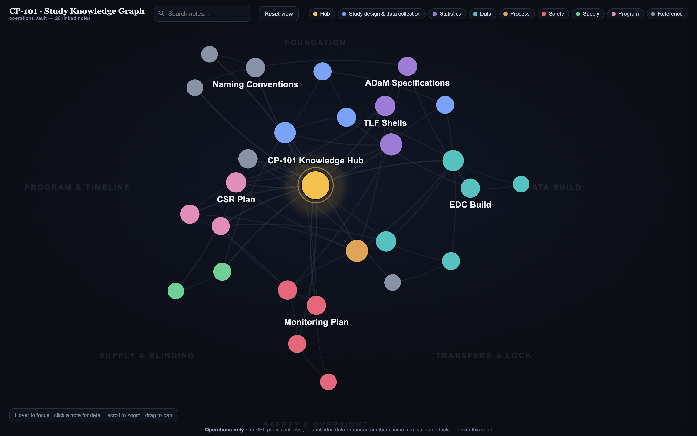

A local‑first Markdown vault — the same idea behind Obsidian, Foam and Logseq — that turns our Study Knowledge Base into a navigable, linked map of a study's operational knowledge, and doubles as a clean corpus for the on‑prem model. This note shows what it is, how it slots into what we already have, the governance, and which tool to pick.

The interactive graph of a synthetic study (CP‑101). Hub at the centre; colour = note type; clusters settle into named regions. Hover to focus a note and its links; click for the full note + backlinks.
Not a new system — a folder of plain text the rest of our stack can already use.
Each artifact is a Markdown note joined to others with [[wikilinks]]. Backlinks answer "what references this DTA?" in one click.
The links draw a map of the study. Navigate by relationship, onboard fast, and spot orphaned or missing connections.
Clean Markdown is the ideal corpus for the on‑prem model — "ask the study" with grounded, human‑gated answers.
It earns its place by doing three things at once, all over the same files.
The auto‑ingest engine writes each entry as a .md note linked to a per‑study hub — open the folder and the graph is just there.
SOPs, naming conventions, the glossary, lessons‑learned — editable, cross‑linked notes. The HTML wikis stay as the read‑only published face.
grows over timePoint the frozen on‑prem SLM at the vault. Same retrieval pattern as the local‑SLM operating wiki — and it still never sources a number.
feeds the SLMOutlook → the existing auto‑ingest → a Markdown vault → people and the model read the same files.
Outlook study mailbox ──▶ Auto-ingest engine ──▶ Markdown vault (.md + [[links]] + git)
(ops emails only) (= your Study KB) ├─ Ingested · read-only
└─ Team notes · editable
│
┌────────────────────────────┴───────────────────────────┐
▼ ▼
Obsidian / Foam / Logseq Local frozen SLM
backlinks · search · graph RAG over the vault
Plain Markdown + git gives versioning and a frozen history — which is exactly the sovereignty / reproducibility story the rest of the program already makes.
The vault is just Markdown files in git. You own the files; the app is only a viewer you can swap.
| Tool | Licence / IT story | Strengths | Watch‑outs |
|---|---|---|---|
| Foam ◀ recommended start | MIT, free. Runs inside VS Code — which biostatisticians often already have approved. | Lowest‑friction IT path; wikilinks + graph; lives next to your code. | Graph is good, not as lush as Obsidian's. |
| Obsidian | Free for personal; commercial‑use licence required at work. | The best graph/UX and plugin ecosystem; the most polished demo. | Third‑party app + a licence; community plugins are unvetted code — allow core + a small vetted set, or none. |
| Logseq | Open‑source, free. | Outliner‑style; strong daily‑notes / journaling. | Different mental model; smaller ecosystem. |
open Knowledge_Graph.html
vault/ folder; its own graph view will match this one (same [[links]]).graph_model.json), so the graph is built, not hand‑drawn:
python3 assemble_vault.py # rebuild the 28 notes python3 kb_to_vault.py --demo # production path: live Study KB entries → vault